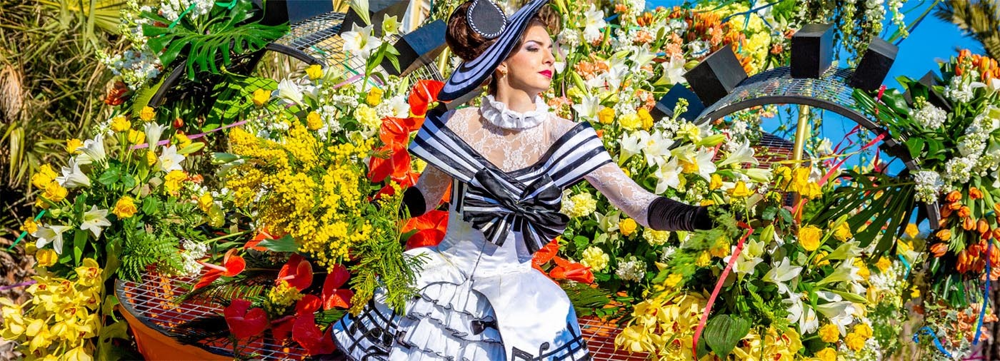

Найвідоміші карнавали Європи
Європа славиться своїми яскравими та неповторними карнавалами, що приваблюють туристів зі всього світу. Давайте разом познайомимось з найвідомішими святами континенту!
1. Венеціанський карнавал, Італія
Венеціанський карнавал - один із найстаріших та найрозкішніших карнавалів світу. Його головна особливість - вишукані маски та костюми, що переносять вас у епоху Ренесансу.
2. Карнавал у Кельні, Німеччина
Карнавал у Кельні відомий своєю енергією та веселощами. Це час, коли вулиці міста перетворюються на величезну сцену з парадами, музикою та костюмованими виставами.
3. Ніцца, Франція - Карнавал квітів
У Ніцці проходить один із найгарніших карнавалів - "Карнавал квітів". Під час святкувань вулиці прикрашені композиціями з квітів, а учасники розкидають пелюстки з платформ.
4. Карнавал у Санта-Крус-де-Тенеріфе, Іспанія
Цей карнавал є другим за величиною у світі після Ріо-де-Жанейро. Гості можуть насолодитися барвистими парадами, музикою та неймовірною атмосферою свята.